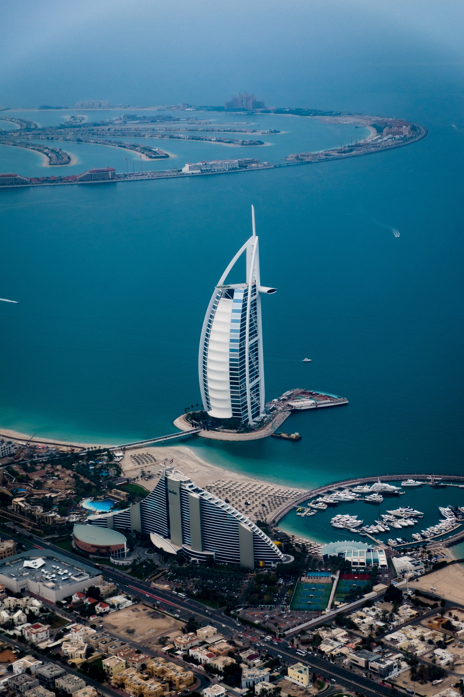

Bali

Bali est une île indonésienne célèbre pour ses montagnes volcaniques boisées, ses rizières, ses plages et ses récifs coralliens. L’île abrite des sites religieux, comme le temple d’Uluwatu construit au sommet d’une falaise à pic. Au sud se trouve la ville balnéaire de Kuta avec ses nombreux bars animés. Les villes de Seminyak, Sanur et Nusa Dua sont également des stations balnéaires très fréquentées. Bali est aussi connue pour ses retraites spirituelles, incluant notamment la pratique du yoga et de la méditation.L'Île des Dieux, plus connue sous le nom de Bali, est une île indonésienne située entre Java et Lombok. Séparée de ces deux dernières par le détroit de Bali à l’ouest et le détroit de Lombok à l’est, sa superficie totale est de 5.637 km2. Bali est la destination touristique la plus prisée et la plus connue d’Indonésie.Denpasar, la plus grande ville de l’île, administre la province et compte plus de 3,8 millions d’habitants. Les villes les plus importantes restent Kuta et Ubud. Cette dernière est d'ailleurs le principal centre culturel et artistique de Bali.
Denpasar, la plus grande ville de l’île, administre la province et compte plus de 3,8 millions d’habitants. Les villes les plus importantes restent Kuta et Ubud. Cette dernière est d'ailleurs le principal centre culturel et artistique de Bali.
Dubai

Dubaï est une ville et un émirat des Émirats arabes unis réputé pour son shopping de luxe, son architecture ultramoderne et sa vie nocturne animée. La Burj Khalifa, tour de 830 mètres de haut, domine le paysage urbain parsemé de gratte-ciel. À son pied, la fontaine de Dubaï présente des jets et des lumières synchronisés avec de la musique. Atlantis, The Palm est un hôtel comprenant parcs aquatiques avec animaux marins situé au large, sur des îles artificielles.Facilité d'accès, simplicité de transfert, quasi absence de décalage horaire, installations de haute technologie et shopping, mais également plages et excellentes conditions météorologiques, autant d'arguments qui ont su attirer de plus en plus de touristes d'année en année.Quoique n'étant ni l'émirat le plus grand ni le plus peuplé, Dubai est devenu le plus connu des sept émirats qui composent la fédération. Cette renommée est due à la médiatisation des projets touristiques construits dans sa capitale, comme l'hôtel Burj-Al-Arab (cliquer-ici pour voir les tarifs), le plus luxueux et le plus « étoilé » du monde, au gigantisme des projets immobiliers comme Palm Islands, presqu'île artificielle en forme de palmier, The World, archipel artificiel qui reproduit la carte du monde, la Dubai Marina à l'architecture particulière et démesurée, sans oublier l'immeuble le plus haut du monde, le Burj Khalifa. Ces projets, revendiqués par le gouvernement, sont présentés comme étant un moyen de devenir d'ici quelques années la première destination mondiale du tourisme de luxe et de devenir l'un des pôles mondiaux du tourisme familial, d'affaires, commercial, etc...
Maldives

Célèbres pour leurs plages et leurs fonds marins, les Maldives apparaissent comme une destination où « tout n’est que rêve et volupté ».
Le décor correspond à tous les clichés d'un paradis tropical : le lagon turquoise, aux eaux cristallines et tièdes, peuplé de milliers de poissons multicolores, la plage immaculée qui borde chaque île avec sa corolle de sable, poussière de corail.Les Maldives, officiellement la République des Maldives, surtout appelée les îles Maldives, est un pays insulaire dans l'océan Indien composé d'une double chaîne de vingt-six atolls, orientées Nord-Sud, qui se trouvent entre l'île Minicoy pour la partie la plus méridionale de Lakshadweep, Inde, et l'archipel des Chagos. La République des Maldives est une nation islamique insulaire dans l'océan Indien près de la pointe sud de l'Inde qui se compose de plus de mille îles, dont 220 sont habitées par les insulaires et 87 autres îles à des fins touristiques.
Plage de sable fin et blanc d'une île des Maldives.Les plages de chaque île des Maldives comporte de grands palmiers et de lagons bleus paradisiaques. Les Maldives sont une destination touristique luxueuse et les îles Maldives abritent, sous un climat propre aux îles, une faune sous-marine exceptionnelle et unique en raison d'une géographie exceptionnelle dans l'océan Indien.
Les chaînes se tiennent dans la mer des Laquedives, distantes d'environ 700 kilomètres au Sud-Ouest de Sri Lanka et de 400 kilomètres au Sud-Ouest de l'Inde. Les Maldives sont intégrées dans l'Asie du Sud-Est.